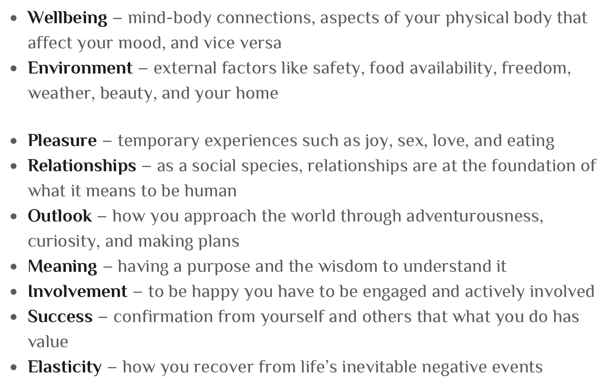

How to define happiness?
Four levels of happiness
1.Happiness from material objects
2.Happiness from comparison: being better, more admired than others etc.
3.The happiness from doing good for others and making the world a better place.
4.Ultimate, perfect happiness
What Are Your Essential Needs to be Happy?
Since happiness is when your life fulfills your needs, the next logical question is, “What are my needs?” Over the millennia many have offered answers to this question and nearly all came back with too simple answers to what is, at its core, a complex problem. Let me ask you a question. Would you say that you, like all humans, are complicated to understand? Of course you are. We all are. If we weren’t life might be much simpler but also much less rich. That complexity means that there are no simple, one-size-fits-all answers to what makes us happy. Our individual needs vary based on our genetics, how we were raised, and our life experiences. That complex combination is what makes each of us unique, both in our exact needs, and in every other aspect of what makes us the person we are. We may each be complex but we are all human and that provides the foundation on which we can discover our essential human needs. Just as we are all born looking human on the outside, we all share common basic needs on the inside. Where we differ is exactly how strongly we feel each of those needs.
